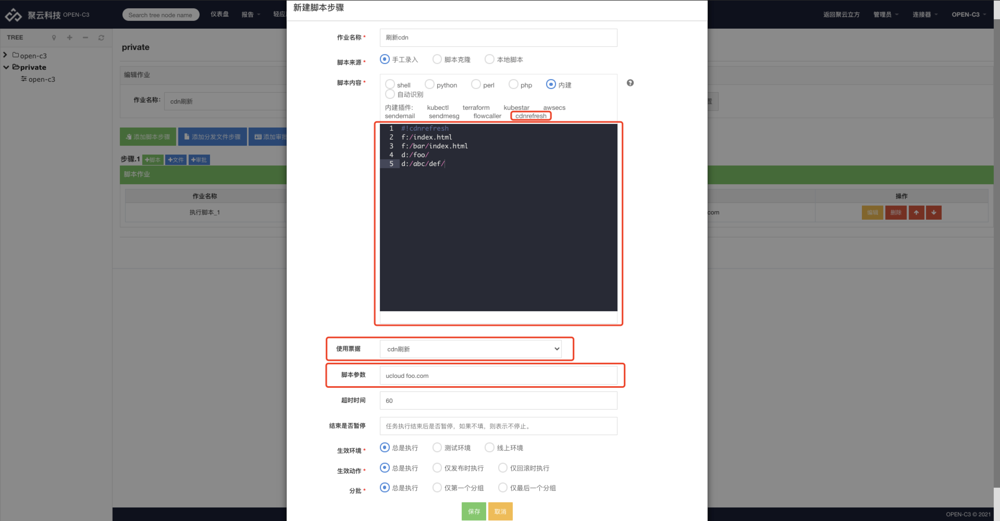

1. 简介
cdnrefresh插件用于刷新CDN。
2. 票据
CDN刷新需要使用账号信息，这部分信息通过票据进行管理。
新建票据，票据类型选择“插件”，票据的内容格式如下的kv键值。
export openc3_cdnrefresh_cdn_abc="123"
2.1. 厂商对应需要的票据键值
2.1.1. aliyun【阿里云】
- openc3_cdnrefresh_aliyun_accessKey
- openc3_cdnrefresh_aliyun_accessSecret
- openc3_cdnrefresh_aliyun_regionId
2.1.2. aws【AWS】
- 无
2.1.3. chinacache【蓝汛】
- openc3_cdnrefresh_chinacache_username
- openc3_cdnrefresh_chinacache_password
2.1.4. dnion【帝联】
- openc3_cdnrefresh_dnion_username
- openc3_cdnrefresh_dnion_password
2.1.5. exclouds【逸云】
- openc3_cdnrefresh_exclouds_Authorization
2.1.6. excloudsPrefetch【逸云】预热
- openc3_cdnrefresh_exclouds_Authorization
2.1.7. huawei【华为】
- openc3_cdnrefresh_huawei_ak
- openc3_cdnrefresh_huawei_sk
2.1.8. isurecloud【云端智度】
- openc3_cdnrefresh_isurecloud_appid
- openc3_cdnrefresh_isurecloud_appsecret
2.1.9. jscdn【金山云】
- openc3_cdnrefresh_jscdn_access_key
- openc3_cdnrefresh_jscdn_secret_key
2.1.10. qcloud【腾讯】
- openc3_cdnrefresh_qcloud_secretId
- openc3_cdnrefresh_qcloud_secretKey
2.1.11. qingcdn【白山云】
- openc3_cdnrefresh_qingcdn_token
2.1.12. qingcdnPrefetch【白山云】预热
- openc3_cdnrefresh_qingcdn_token
2.1.13. qiniu【七牛】
- openc3_cdnrefresh_qiniu_ak
- openc3_cdnrefresh_qiniu_sk
2.1.14. ucloud【ucloud】
- openc3_cdnrefresh_ucloud_public_key
- openc3_cdnrefresh_ucloud_private_key
- openc3_cdnrefresh_ucloud_project_id
3. 插件配置

使用内建插件，点击cdnrefresh类型。
脚本内容：
#!cdnrefresh
f:/index.html
f:/bar/index.html
d:/foo/
d:/abc/def/
每一行是一个要刷新的地址，文件以“f:”开头，目录以“d:”开头。
脚本参数： 厂商名称 要刷新的域名【例：ucloud foo.com】
4. 维护注意
[root@openc3-srv-docker cdnrefresh.code]# ll /data/Software/mydan/JOB/buildin/cdnrefresh.code
total 60
-rwxr-xr-x. 1 root root 3189 Jul 2 22:01 aliyun
-rwxr-xr-x. 1 root root 2172 Jul 2 20:54 aws
-rwxr-xr-x. 1 root root 2445 Jul 2 22:03 chinacache
-rwxr-xr-x. 1 root root 3067 Jul 2 22:04 dnion
-rwxr-xr-x. 1 root root 2409 Jul 2 21:05 exclouds
-rwxr-xr-x. 1 root root 3702 Jul 2 21:06 excloudsPrefetch
-rwxr-xr-x. 1 root root 3984 Jul 2 22:07 huawei
-rwxr-xr-x. 1 root root 2656 Jul 2 21:33 isurecloud
-rwxr-xr-x. 1 root root 4475 Jul 2 21:36 jscdn
-rwxr-xr-x. 1 root root 2719 Jul 2 21:53 qcloud
-rwxr-xr-x. 1 root root 2224 Jul 2 21:55 qingcdn
-rwxr-xr-x. 1 root root 3486 Jul 2 22:11 qingcdnPrefetch
-rwxr-xr-x. 1 root root 3211 Jul 2 21:57 qiniu
-rwxr-xr-x. 1 root root 3992 Jul 2 22:00 ucloud
每一个可以刷新的厂商对应该目录下一个可执行文件，现有的文件都是用python编写的，
系统维护人员需要安装python依赖包。